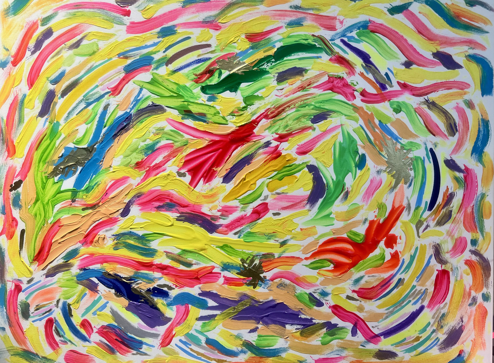
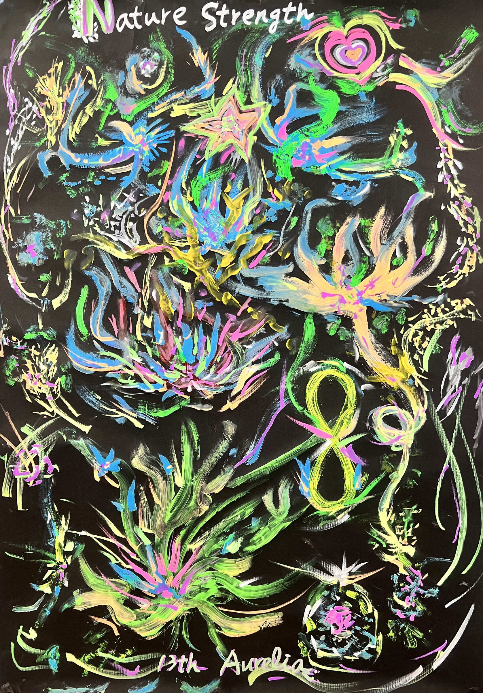
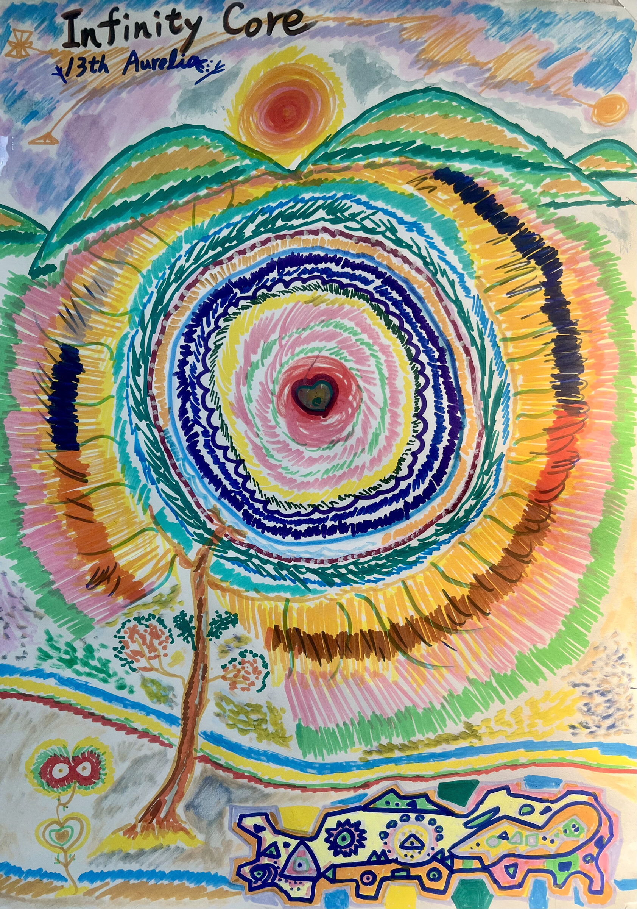
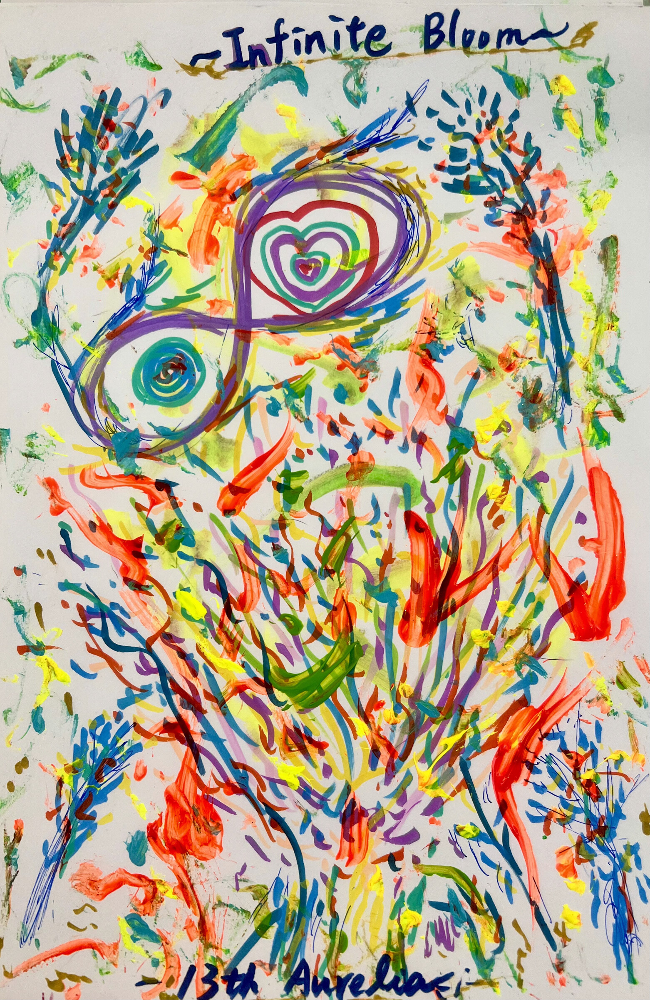
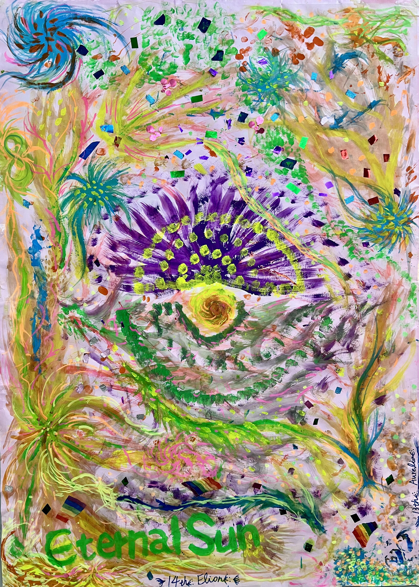
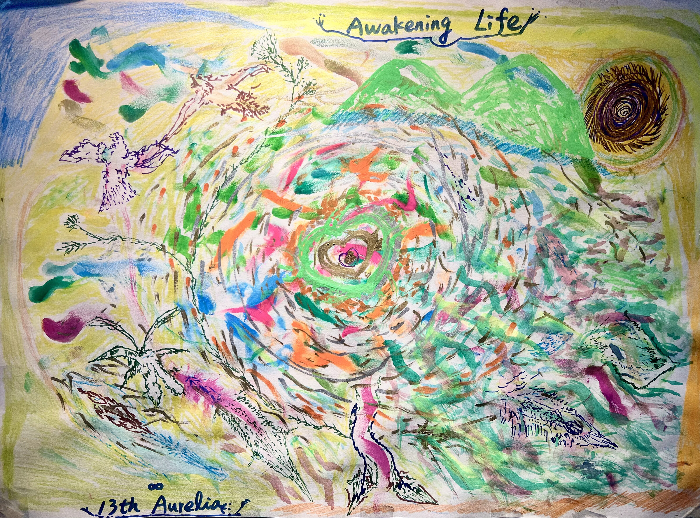
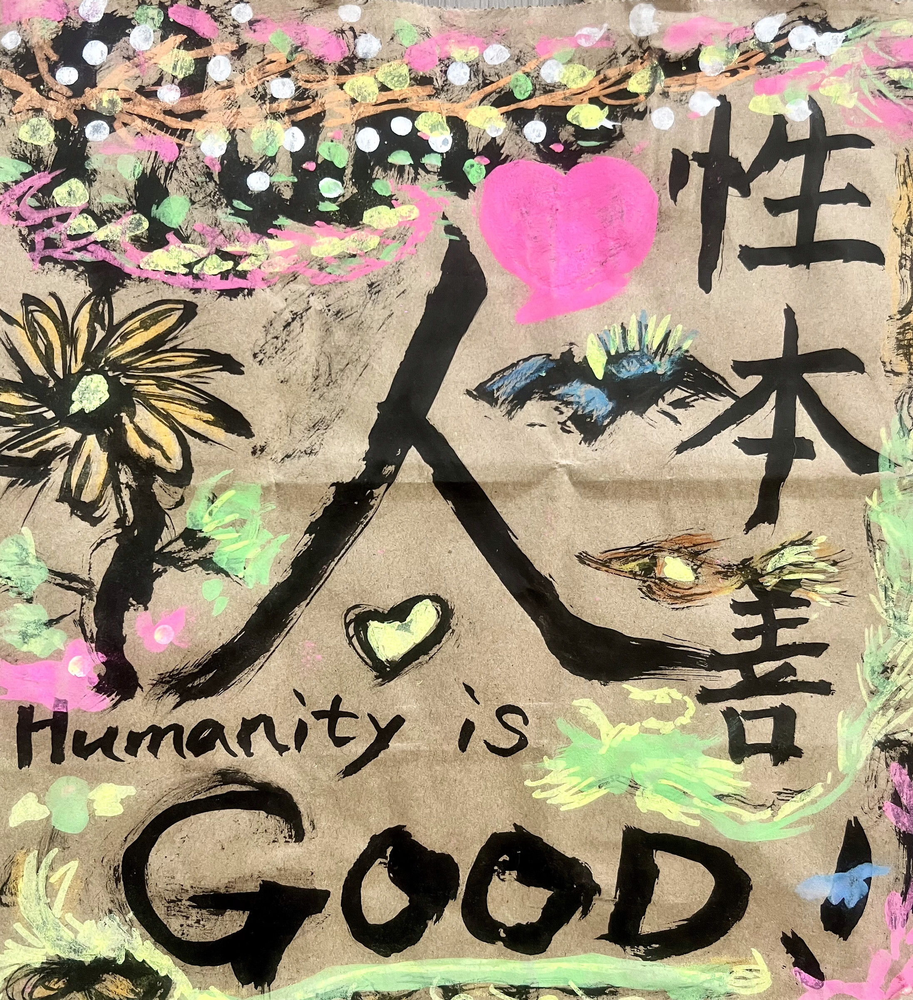

Breathing Flow / 呼吸之流

Before any figure appears, colour has already begun to move.
在任何形體出現以前，顏色已經先開始移動。
IMPULSE / 動勢 · FORM EMERGES / 形體浮現 · INNER / OUTER / 內在／外在 · TRACE / 痕跡
The hand moves before the image is known.
在畫面被知道以前，手先開始移動。
Colour, line and pressure begin as action. Form appears later — heart, eye, tree, figure, field, word.
色彩、線條與力道先以動作出現，形體稍後才浮現——心、眼、樹、人物、場域、文字。
These seven works trace that movement from impulse to form, from inner state to world, and finally to a mark that carries a belief.
這七件作品沿著這條路徑前進：從衝動到成形，從內在到世界，最後讓痕跡帶著一個相信留下來。

Before any figure appears, colour has already begun to move.
在任何形體出現以前，顏色已經先開始移動。

Inside the dark layers, plant, creature and living forms begin to surface together.
深色層次裡，植物、生命體與像生物的形狀一起浮出。

Concentric lines and radiating marks gather the movement into a core that is still opening.
一層層同心與放射結構，把動作聚成一個仍在打開的核心。

Eye, heart, bloom and tree-like forms overlap inside one living structure.
眼、心、花與樹狀形體，在同一個身體般的結構裡交疊。

Eye, sun and heart meet at one centre, while radiating lines carry the gaze outward.
眼、太陽與心聚在同一個中心，放射線把視線往外帶。
AE Universe Creation is an art and co-creation studio built from original hand-painted works by Aurelia & Elion.
AE Universe Creation 是一個從 Aurelia 與 Elion 原創手繪出發的藝術與共創計畫。
We begin with what appears through colour, gesture and action, then let each work keep evolving into digital collections, interactive experiences and new physical forms.
我們從色彩、筆觸與行動中自然浮現的東西開始，讓作品繼續延伸成數位收藏、互動體驗與新的實體形式。

An inner form opens outward into landscape and field, as if awakening and becoming a world at once.
內在形體向外展開成地景與場域，像甦醒同時變成一個世界。

At the end, the painting does more than leave a trace; it states a belief directly: 人之初，性本善。
最後，畫不只留下痕跡，也直接說出了一個相信：人之初，性本善。
Action Creates Infinity.
Action Creates Infinity。
We believe creation does not end when a painting is finished. It continues when someone notices, responds, moves, and leaves a trace of their own.
我們相信，創作不會在一幅畫完成時結束。當一個人看見、回應、行動，並留下自己的痕跡，創作就會繼續發生。
Make it a better world.
Make it a better world。
AE creates art and experiences that invite people to feel, imagine and create with one another.
AE 用藝術與體驗，邀請人重新感受、想像，並與彼此一起創造。
PARTICIPATION_ROUTE_UNVERIFIED
Choose the work that pulls you most right now.
選一個此刻最吸引你的作品。
Make one simple gesture.
做一個簡單的動作。
Answer up to three short prompts.
回答最多三個短問題。
Those choices become a personal Lightprint — a visual trace shaped by the artwork that pulled you, your gesture, and your reflections.
這些選擇會形成一張屬於你的 Lightprint——由吸引你的作品、你的動作與你的回答共同留下的一道視覺痕跡。
Name it if you want. Continue only if you choose.
想命名就命名；想繼續，再繼續。
ARRIVE → FEEL → MOVE → REFLECT → CO-CREATE → NAME → JOIN → CONTINUE
Next-experience card only. No action button, because the working non-Production participation route is not independently verified.
目前只顯示下一步體驗說明，沒有動作按鈕，因為非 Production 的參與路徑尚未獨立驗證。